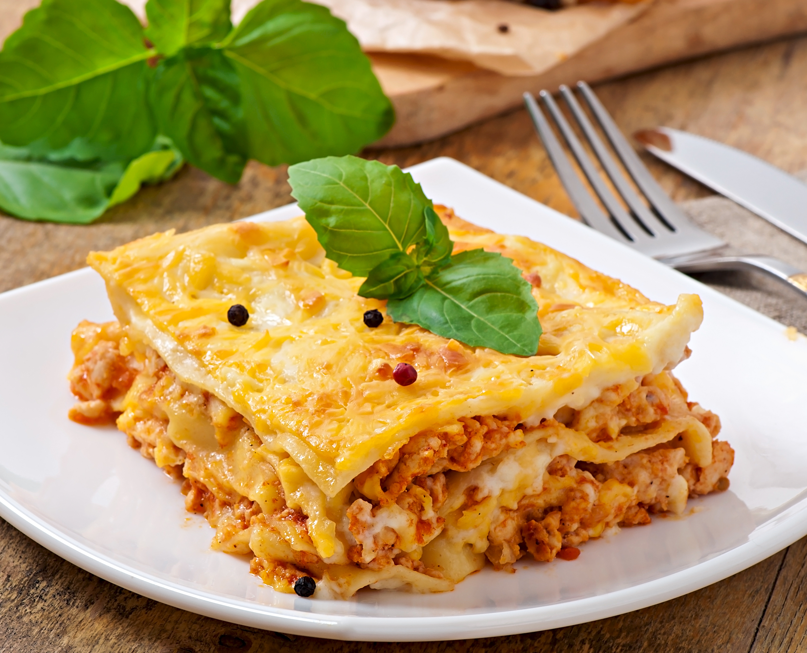

Recipes
Home

Description
This classic baked lasagna layers rich, slow-simmered meat sauce, creamy ricotta, and melted mozzarella between tender sheets of pasta for the ultimate comfort meal. The hearty sauce begins with sautéed onions, garlic, ground beef, and Italian sausage simmered with crushed tomatoes, tomato paste, and aromatic herbs like basil and oregano. Meanwhile, a smooth cheese mixture is prepared by combining whole-milk ricotta with an egg, grated Parmesan, and fresh parsley to keep the layers rich and structured.
To assemble, a thin layer of meat sauce is spread across the bottom of a baking dish, followed by alternating layers of cooked lasagna noodles, ricotta mixture, meat sauce, and shredded mozzarella. After repeating the layers and finishing with a generous blanket of mozzarella and Parmesan on top, the dish is covered with foil and baked until hot and bubbling. Uncovering the lasagna for the final few minutes allows the cheese to turn golden brown, creating a crisp, savory crust that contrasts with the soft, flavorful layers underneath.
Ingredients
- 1 tbsp (15 ml) olive oil
- 1 large onion, finely diced
- 1 medium carrot, finely grated
- 1 stalk celery, finely diced
- 4 cloves garlic, minced
- 500 g lean beef mince
- 250 g pork sausages (casings removed) or additional beef mince
- 125 ml dry red wine or beef stock
- 2 tbsp (30 ml) tomato paste
- 1 can (800 g) crushed tomatoes
- 1 tsp (5 ml) dried oregano
- 1 tsp (5 ml) dried basil
- 1 bay leaf
- 1 tsp (5 ml) sugar
- Salt and freshly ground black pepper, to taste
- 250 g lasagna sheets (about 12–15 sheets, oven-ready or boiled according to packet instructions)
- 400 g mozzarella cheese, grated
- 30 g Parmesan cheese, grated (for topping)
- 1 large egg, lightly beaten
- 2 tbsp (30 ml) fresh parsley, chopped
Steps
- Start the sauce: Heat the olive oil in a large, heavy-based pot over medium heat. Add the onion, carrot, and celery, and cook for 6–8 minutes until softened. Stir in the garlic and cook for 1 minute until fragrant.
- Brown the meat: Increase the heat to medium-high. Add the beef mince and sausage meat, breaking it up with a wooden spoon. Cook for 8–10 minutes until browned all over. Drain any excess fat if necessary.
- Simmer the sauce: Pour in the red wine (or beef stock) and let it bubble for 2 minutes while scraping the bottom of the pot. Stir in the tomato paste, crushed tomatoes, oregano, basil, bay leaf, sugar, salt, and pepper. Reduce the heat to low, cover partially, and simmer gently for 30–40 minutes, stirring occasionally. Remove the bay leaf before assembling.
- Prepare the cheese mixture: While the sauce simmers, combine the ricotta, beaten egg, grated Parmesan, parsley, nutmeg, salt, and pepper in a medium bowl until smooth.
- Preheat and prep: Preheat your oven to 190°C (170°C fan). If your lasagna sheets require pre-boiling, cook them until al dente and lay them flat on a clean kitchen towel so they don't stick.
- Assemble the lasagna: Spread a thin ladleful of meat sauce across the bottom of a deep 23x33 cm baking dish. Place a single layer of lasagna sheets over the sauce, overlapping slightly. Spread one-third of the ricotta mixture over the pasta, top with one-third of the remaining meat sauce, and sprinkle with a handful of mozzarella.
- Repeat layers: Repeat the pasta, ricotta, meat sauce, and mozzarella layers two more times. Finish with a final layer of pasta sheets, any remaining meat sauce, the rest of the mozzarella, and the extra Parmesan.
- Bake: Spray a piece of foil with non-stick cooking spray (to prevent cheese from sticking) and cover the dish tightly. Bake for 25 minutes. Remove the foil and bake for another 15–20 minutes until the top is golden brown and bubbling.
- Rest and serve: Let the lasagna rest for at least 15 minutes before slicing this allows the layers to set so it holds its shape on the plate.